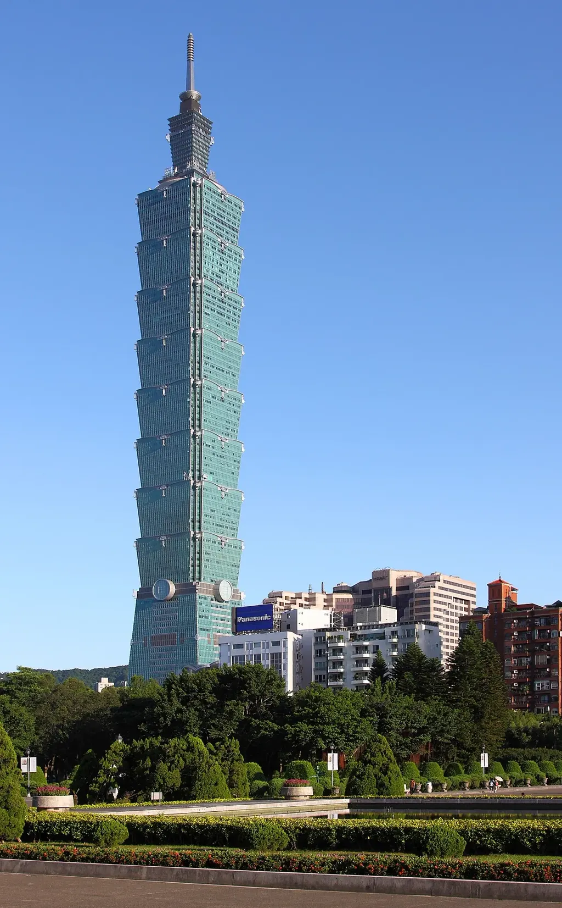
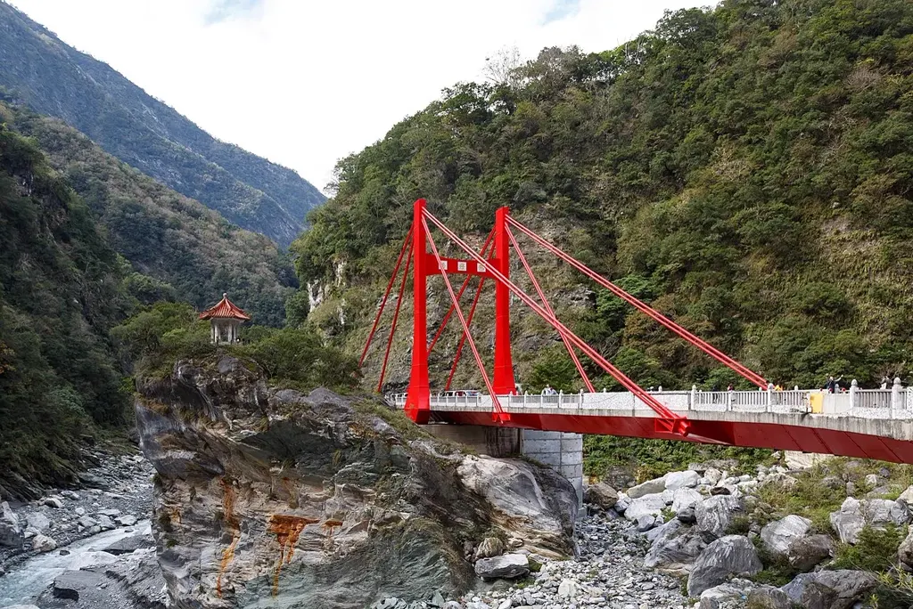

Taipei 101
The landmark tower offers skyline views, high-speed elevators and a mall below.
Best: clear autumn daysFrom high-rise city views to mountain villages and deep gorges, Taiwan rewards travellers who mix major sights with slower local journeys.

The landmark tower offers skyline views, high-speed elevators and a mall below.
Best: clear autumn days
Marble cliffs, tunnels and rivers define this celebrated national park.
Best: spring and autumn
Cycle beside the water or take a ferry between lakeside villages.
Best: October to April
A former mining town with tea houses, stair lanes and misty mountain views.
Best: weekdays